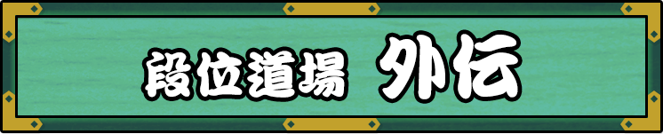
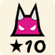

段位道場プラスは、太鼓の達人ニジイロプラスが作った段位道場外伝のプラス方式です。
復活！ホワイト玄人

ノるどん2000
紫煌ノ乱
きたさいたま2000
お題情報
魂ゲージ : 100％
可の数 : 50未満
不可の数 : 15未満
補足説明
過去の段位道場のお題が復活！
なつかしのお題に挑戦してみよう！
注意事項
※課題曲をもっていなかったり、
あそべない地域だったりした場合は利用できません
※段位道場がおやすみしている期間は利用できません
PAGE TOP
This unofficial simulator is unaffiliated with BANDAI NAMCO.
Game System From ©Bandai Namco Entertainment Inc.
Custom Patch From EXPLUS